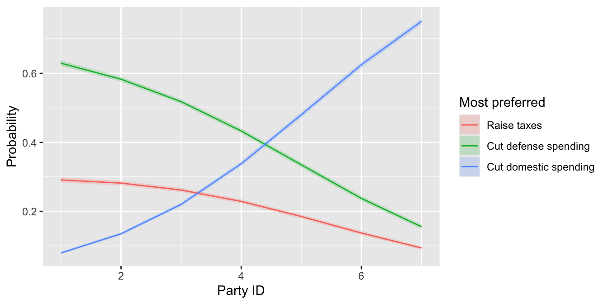
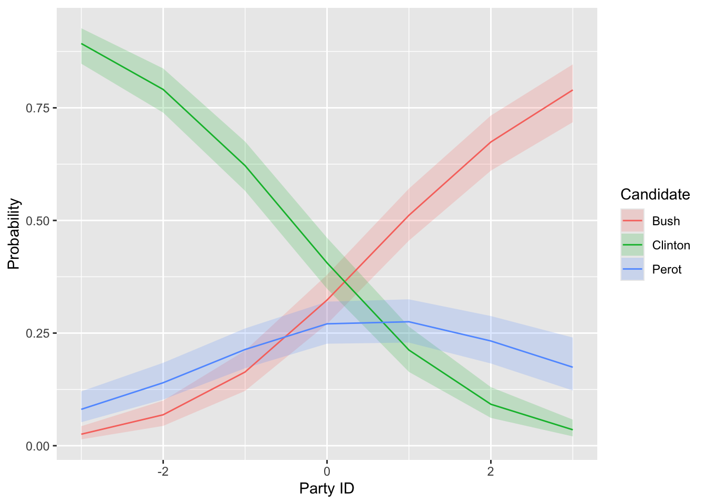

The function \(f(z) = \frac{e^z}{1 + e^z}\) is called the inverse-logit function and maps any real number \(X_i \beta\) into a probability between 0 and 1.
The softmax generalizes the inverse-logit—it takes \(J\) real inputs (i.e., from \(\mathbb{R}^J\)) and scales them to sum to one.
\[
\text{softmax}(z_j) = \frac{\exp(z_j)}{\sum_{k=1}^{J} \exp(z_k)}, \qquad j = 1,\ldots,J.
\] Because the \(J\) outputs must sum to one, it is natural to interpret the outputs as probabilities.
The OJS widget below allows you to experiment with \(J = 4\) inputs and see how the outputted probabilities change.
viewof z1 = Inputs.range([-5,5], {step:0.1,value:1,label:"z1"});viewof z2 = Inputs.range([-5,5], {step:0.1,value:0.5,label:"z2"});viewof z3 = Inputs.range([-5,5], {step:0.1,value:-0.5,label:"z3"});viewof z4 = Inputs.range([-5,5], {step:0.1,value:-1,label:"z4"});// Softmax pieceslabels = ["Pr(A)","Pr(B)","Pr(C)","Pr(D)"];zs = [z1, z2, z3, z4];exps = zs.map(Math.exp);sumexp = exps.reduce((a, b) => a + b,0);ps = exps.map(e => e / sumexp);// Data for stacked bar (one row, four segments)data = ps.map((p, i) => ({ label: labels[i],value: p,row:"softmax" }));// === Two-column layout: sliders (left) + live table (right) ==={const container =html`<div style="display:flex; gap:16px; align-items:flex-start;"></div>`;// Left column: slidersconst left =html`<div style="display:grid; gap:8px; min-width:220px;"></div>`;left.append(viewof z1, viewof z2, viewof z3, viewof z4);// Right column: tableconst rows = labels.map((cls, i) => ({Class: cls,z: zs[i],"exp(z)": exps[i],Probability: ps[i]}));const right =html`<div style="min-width:260px;"></div>`;right.append(Inputs.table(rows, {columns: ["Class","z","exp(z)","Probability"],format: {z: d => d.toFixed(2),"exp(z)": d => d.toFixed(3),Probability: d => (d *100).toFixed(1) +"%"}}));container.append(left, right);return container;}
Data: 1992 ANES Time Series Study (Miller et al. 2016); the same respondents as the Bush approval example in the ordered logit chapter.
Outcome: vote_1992, the reported presidential vote: Bush, Clinton, or Perot.
Predictors:
party_id: party identification, from −3 (strong Democrat) through 0 (independent) to 3 (strong Republican).
economy: evaluation of the national economy compared with a year ago, from 1 (much better) to 5 (much worse).
[CTK: 592 voters complete on these variables]
Miller, Warren E., Donald R. Kinder, Steven J. Rosenstone, and University of Michigan. Institute for Social Research. American National Election Studies. 2016. “ANES 1992 Time Series Study.” Inter-university Consortium for Political; Social Research [distributor]. https://doi.org/10.3886/ICPSR06067.v3.
[CTK: provenance — Adolph’s Problem Set 4 (Adolph 2025); same file as the ordered example; Perot as the reason a nominal model is needed]
Adolph, Christopher. 2025. “Problem Set 4: Modeling Presidential Approval with Ordered Probit.”POLS/CSSS 510: Maximum Likelihood Methods for the Social Sciences, University of Washington, Fall Quarter 2025. https://faculty.washington.edu/cadolph/mle/510hw4.pdf.
22.4.1multinom()
library(tidyverse)library(nnet) # for multinom()library(marginaleffects)# load data; keep complete cases on the model's variablesvote <-read_csv("https://pos5747.github.io/data/bush-approval-1992.csv") |>select(vote_1992, party_id, economy) |>drop_na() |>mutate(vote_1992 =factor(vote_1992, levels =c("Bush", "Clinton", "Perot"))) |>glimpse()
[CTK: two rows of coefficients, one linear predictor per non-baseline candidate; each relative to Bush]
[CTK: baseline first here (multinom()), last in the math above; the probabilities don’t change]
[CTK: signs: party_id negative for both rows (Republicans → Bush); economy positive for both (worse economy → away from Bush)]
# probability of each candidate as party ID variesp <-predictions(fit_vote, newdata =datagrid(party_id =-3:3), type ="probs")# plotggplot(p, aes(x = party_id, y = estimate, ymin = conf.low, ymax = conf.high,color = group, fill = group)) +geom_ribbon(alpha =0.2, color =NA) +geom_line() +labs(x ="Party ID", y ="Probability", color ="Candidate", fill ="Candidate")
[CTK: Pr(Perot) rises then falls (about 0.08 at −3, peak about 0.28 at 0 to 1, 0.18 at 3), though both linear predictors are linear in party ID]
[CTK: why: Perot’s party_id coefficient (−0.44) sits between Bush’s (0) and Clinton’s (−1.10); the softmax shares probability]
[CTK: so the sign of a coefficient doesn’t give the direction of that category’s probability; compute probabilities]
# change in each candidate's probability as the economy goes from# "better" (2) to "worse" (4), for a typical respondentcomparisons(fit_vote,variables =list(economy =c(2, 4)),newdata =datagrid(grid_type ="mean_or_mode"),type ="probs")
Group Estimate Std. Error z Pr(>|z|) S 2.5 % 97.5 %
Bush -0.2188 0.0628 -3.487 <0.001 11.0 -0.3418 -0.0958
Clinton 0.1799 0.0472 3.811 <0.001 12.8 0.0874 0.2724
Perot 0.0389 0.0458 0.851 0.395 1.3 -0.0508 0.1287
Term: economy
Type: probs
Comparison: 4 - 2
[CTK: worse economy: Bush −0.22, Clinton +0.18, Perot +0.04 (CI includes 0)]
[CTK: Perot’s economy coefficient is positive (0.34), but Clinton gains most of what Bush loses]
22.5 Example: Balancing the federal budget, CCES 2012
Outcome: budget, the answer to “If the Congress were to balance the budget it would have to consider cutting defense spending, cutting domestic spending (such as Medicare and Social Security), or raising taxes to cover the deficit. What would you MOST prefer that Congress do?” Three categories: cut defense spending, cut domestic spending, or raise taxes.
Predictors:
party_id: party identification, from 1 (strong Democrat) to 7 (strong Republican).
female: 1 for women, 0 for men.
income: family income in 16 brackets, from 1 (less than $10,000) to 16 ($500,000 or more).
45,237 respondents with valid answers on all four variables.
Ansolabehere, Stephen, and Brian F. Schaffner. 2013. “CCES Common Content, 2012.” Harvard Dataverse. https://doi.org/10.7910/DVN/HQEVPK.
This example is inspired by a SAGE Research Methods Datasets guide (Reid and Allum 2020). We use exactly the same model specification as the guide. Our data set is larger than the guide’s (45,237 respondents rather than 35,759). The dataset from the guide is an extract shared with other SAGE guides, and it keeps only respondents who answered all 15 survey items in the larger extract, including questions about immigration, gun control, and race that are not in this model. Our larger dataset includes every respondent who answered the four questions in this model.
Reid, Abigail-Kate, and Nick Allum. 2020. “Learn about Multinomial Logit in Stata with Data from the Cooperative Congressional Election Study (2012).” London: SAGE Research Methods Datasets Part 1; SAGE Publications. https://doi.org/10.4135/9781529710465.
library(tidyverse)library(nnet) # for multinom()library(marginaleffects)# load data; "Raise taxes" first, so it is the baselinecces <-read_csv("data/cces2012-budget.csv") |>mutate(budget =factor(budget, levels =c("Raise taxes","Cut defense spending","Cut domestic spending"))) |>glimpse()
Two rows of coefficients, each relative to raising taxes.
party_id: −0.04 for cutting defense, 0.56 for cutting domestic spending.
female: 0.06 for cutting defense, −0.33 for cutting domestic spending.
# probability of each choice as party ID variesp <-predictions(fit_budget, newdata =datagrid(party_id =1:7), type ="probs")ggplot(p, aes(x = party_id, y = estimate, ymin = conf.low, ymax = conf.high,color = group, fill = group)) +geom_ribbon(alpha =0.2, color =NA) +geom_line() +labs(x ="Party ID", y ="Probability", color ="Most preferred", fill ="Most preferred")

female at its mode (1) and income at its rounded mean (6, $50,000–59,999).
Strong Democrats to strong Republicans: Pr(cut domestic spending) 0.08 to 0.75; Pr(cut defense spending) 0.63 to 0.16; Pr(raise taxes) 0.29 to 0.09.
# women minus men, for an independent with income 6comparisons(fit_budget, variables ="female", newdata =datagrid(grid_type ="mean_or_mode"), type ="probs")
Women: 0.07 more likely to prefer cutting defense, 0.09 less likely to prefer cutting domestic spending, 0.02 more likely to prefer raising taxes.
22.6 With brm()
22.6.1 The 1992 presidential vote
library(brms)# fit the same model with brm(); categorical() is the multinomial logit,# with the first level (Bush) as the baselinefit_vote_brm <-brm(vote_1992 ~ party_id + economy,data = vote,family =categorical(link ="logit"),backend ="cmdstanr",chains =4,cores =4,seed =1234)
Show the code for the table
library(tinytable)# put the multinom() and brm() estimates side by sidecompare_mnl <-function(fit_ml, fit_brm) {# multinom(): ML estimates and standard errors ml <- broom::tidy(fit_ml) |>transmute(outcome = y.level,term =if_else(term =="(Intercept)", "Intercept", term),est_ml = estimate,se_ml = std.error)# brm(): posterior means and SDs; mu is brms's prefix for each outcome's# linear predictor, so the names look like mu<outcome, no spaces>_<term> bayes <-fixef(fit_brm) |>as_tibble(rownames ="name") |>separate_wider_delim(name, delim ="_", names =c("mu", "term"),too_many ="merge") |>transmute(mu, term, est_brm = Estimate, se_brm = Est.Error)# match brm()'s names to multinom()'s outcome labels ml |>mutate(mu =paste0("mu", str_remove_all(outcome, "[^[:alnum:]]"))) |>left_join(bayes, by =c("mu", "term")) |>select(-mu)}# make a table with one block of rows per outcomett_mnl <-function(comparison) { comparison |>select(-outcome) |>as.data.frame() |>setNames(c("Term", "Estimate", "SE", "Estimate", "SE")) |>tt(notes ="multinom(): ML estimates and standard errors. brm(): posterior means and standard deviations.") |>format_tt(j =2:5, digits =3, num_fmt ="decimal") |>style_tt(j =2:5, align ="r") |>group_tt(i = comparison$outcome,j =list("multinom()"=2:3, "brm()"=4:5))}compare_mnl(fit_vote, fit_vote_brm) |>tt_mnl()
multinom()
brm()
Term
Estimate
SE
Estimate
SE
multinom(): ML estimates and standard errors. brm(): posterior means and standard deviations.
Clinton
Clinton
Clinton
Clinton
Clinton
Intercept
-1.978
0.622
-1.987
0.623
party_id
-1.098
0.086
-1.112
0.085
economy
0.551
0.151
0.554
0.151
Perot
Perot
Perot
Perot
Perot
Intercept
-1.519
0.585
-1.539
0.591
party_id
-0.439
0.077
-0.445
0.079
economy
0.336
0.144
0.341
0.146
[CTK: posterior means within about 0.02 of the ML estimates (e.g., Clinton party_id −1.11 vs −1.10; Perot economy 0.34 vs 0.34); default priors barely matter at N = 592]
# probability of each candidate as party ID varies, now with posterior intervals# (for this fit, predictions() returns rowid but not the grid columns, so join them back)grid <-datagrid(model = fit_vote_brm, party_id =-3:3)p_brm <-predictions(fit_vote_brm, newdata = grid) |>left_join(select(grid, rowid, party_id), by ="rowid")ggplot(p_brm, aes(x = party_id, y = estimate, ymin = conf.low, ymax = conf.high,color = group, fill = group)) +geom_ribbon(alpha =0.2, color =NA) +geom_line() +labs(x ="Party ID", y ="Probability", color ="Candidate", fill ="Candidate")

[CTK: same {marginaleffects} code, no type = "probs"; group column holds the candidate; the grid columns need joining back by rowid]
[CTK: why bother with brm(): priors, hierarchical extensions (weeks 10–11)]
22.6.2 Balancing the federal budget
# fit the same model with brm(), with "Raise taxes" as the baselinefit_budget_brm <-brm(budget ~ party_id + female + income,data = cces,family =categorical(link ="logit"),backend ="cmdstanr",chains =4,cores =4,seed =1234)